About
I am a current Undergraduate of Engineering student at Cornell University majoring in Electrical and Computer Engineeering. My area of interests include robotics, automotives, embedded systems, microcontrollers, hardware, and power systems. I can be reached at qh229@cornell.edu.
Lab 1The Artemis board and Bluetooth
Introduction
During this lab, I explored two major tasks:
- Lab 1A: Familiarized with the SparkFun RedBoard Artemis Nano using the Arduino IDE.
- Lab 1B: Established Bluetooth communication between Artemis board and a Python environment running in a Jupyter notebook.
By the end of these two lab sections, I set up my board, gathered sensor data, and used wireless connections to transmit information back and forth.
Parts Required
- 1 × SparkFun RedBoard Artemis Nano
- 1 × USB Cable
Lab 1A: Arduino IDE and Artemis Board
Objective:
1. Install the Arduino IDE and
Sparkfun Appollo3 boards
manager to program the Artemis board.
2. Upload example sketches to test the board's built-in LED, serial communication, temperature
sensor, and pulse-density microphone.
Prelab:
In preparation, I installed the Arduino IDE (latest version), added the SparkFun Apollo3 boards
manager via the SparkFun JSON link, and checked that my board manager was up to date.
Tasks:
- Selected the correct board and port in the Arduino IDE and connect to Artemis board.
-
Uploaded the following example sketches from
File -> Examples:- Blink - Confirmed the onboard LED was blinking.
- Example4_Serial - Printed messages to the Serial Monitor and tested input/output.
- Example2_analogRead - Monitored the onboard temperature sensor.
- Example1_MicrophoneOutput - Tested the pulse density microphone.
Lab 1B: Bluetooth Connectivity
Objective:
1. Establish BLE (Bluetooth Low Energy) communication between Artemis board and a Python environment in Jupyter Lab.
2. Send commands from computer to the Artemis and receive data back from the board.
Prelab:
Before starting, I read through and understand the provided Python code (in ble_python),
which uses ArduinoBLE on the Artemis side. I noted that message sizes are limited
to 150 bytes.
Setup and Configuration:
After setting up the virtual environment in my file directory and install jupyter lab through pip,
I was able to open the given ble_robot_1.2 successfully.
To set up BLE connection with the Artemis, I retrieved my Artemis's MAC Address from the serial
output, updated MAC address in connections.yaml, and generated a new
UUID to prevent conflicts.

After updating UUIDs in ble_arduino.ino and ble_serice ID in
connections.yaml, changing the elif condition in base_ble.py
line 69, I successfully connected to the Artemis board through bluetooth.
Tasks:
-
ECHO Command:
This task involves sending an ECHO command with a string value from the computer to the Artemis. The Artemis receives the command and returns an augmented string back to the computer. As shown in the images below, the Python code uses
ble.send_command(CMD.ECHO, "HiHello")to send the string "HiHello" to the board. On the Artemis side, the C++ firmware reads this string withrobot_cmd.get_next_value(), prepends "Robot says -> ", appends a smiley, and writes it to the BLE characteristic. Finally, the Python script callsble.receive_string(...)to capture the modified string, printing the returned message.

-
SEND_THREE_FLOATS:
The SEND_THREE_FLOATS command allows the computer to transmit three floating‐point values to the Artemis board, where they are then parsed and displayed. In the C++ firmware, each float is retrieved one at a time via
robot_cmd.get_next_value()(e.g.float_a,float_b,float_c). If any retrieval fails, the function returns early, ensuring valid data is received. Once all three floats are successfully parsed, a confirmation message is printed to the Serial Monitor with the values.
-
GET_TIME_MILLIS:
The GET_TIME_MILLIS command prompts the Artemis board to reply with the current milliseconds count since startup. In the C++ firmware, this is done by calling the
millis()function, converting its return value to an integer, and appending it to a string prefixed with"T:".
-
NOTIF_HANDLER:
To receive the string value from the Artemis board via the
BLEStringCharacteristic, a notification handler must be registered in Python. This is typically done by callingble.start_notify(ble.uuid['RX_STRING'], notif_handler), where notif_handler is a callback function. Whenever the Artemis board writes a new value to the RX_STRING characteristic, the BLE stack automatically invokes notif_handler, passing in the raw bytes.
-
NOTIF_HANDLER:
The board will repeatedly retrieves the current time in milliseconds using
millis()inside a for loop, then appends that value to a string (e.g.,"T:2839.000") and sends it to the laptop using the BLE characteristic. The Python side has a notification handler listening for updates onRX_STRING, which logs each new message arrival. By collecting these values for several seconds and noting their arrival timestamps in Python, I calculated the frequently messages is 73 message per second.
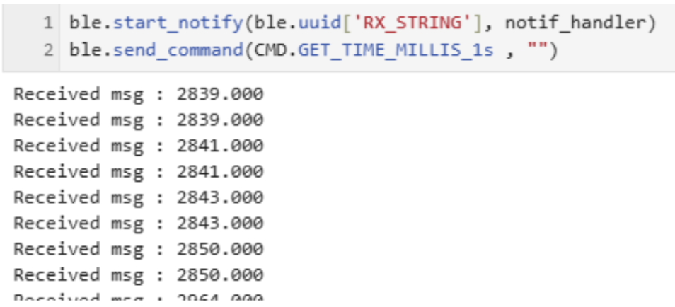
-
Store Timestamps in an Array:
To collect multiple timestamps on the Artemis board and store them for later transmission, first, a global array (e.g.
timestamps[SIZE]) is defined so it can be accessed by different commands. The helper function TIME_DATA_ARRAY reads two parameters—an index (how many timestamps to store) and an optional delay between reads. In a loop,millis()is called to get the current time in milliseconds, and that timestamp is placed into the array. A brief delay (delay(timestamp_delay)) is used to select the data collection gap to widen the data collection time range.Next, the SEND_TIME_DATA function reads in how many timestamps need to be transmitted, then loops through the array and sends each entry as a string (e.g.,
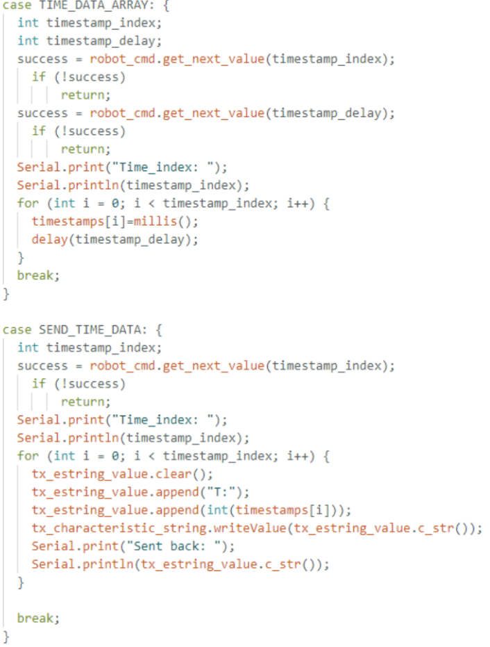"T:6715") using the BLE characteristic.
-
Store Timestamps and Temperature:
In this extension of the previous data collection task, a second global array is created to store temperature readings in parallel with the existing timestamp array. Each element in the temperature array corresponds to the same index in the timestamp array—so for index i, the recorded time and temperature values were captured simultaneously.
A new command (TIME_TEMP_DATA_ARRAY) collects a specified number of measurements, storing the current millisecond count (using
millis()) in one array and the temperature reading (for instance, fromgetTempDegF()) in the other. A second command (GET_TEMP_READINGS) then loops through both arrays concurrently, generating a string (for example,"Time:93512 Temp:77") for each entry and sending it over BLE to the host computer.
-
Discussion of Two Methods:
Storing data in arrays before transmission (Method B) allows for higher sampling rates and more efficient BLE throughput compared to sending each sample immediately (Method A). Method A is simpler and provides near-real-time feedback but can overwhelm the BLE connection if samples are frequent, while Method B can accumulate data and then send it in bursts, albeit requiring more memory and delaying data visibility. For example, the Artemis board's 384 kB of RAM can store tens of thousands of pairs of 32-bit time stamps and temperature readings (roughly 8 bytes per sample), making this approach ideal for high-speed data logging followed by bulk data transfer when needed.
Conclusion
In Lab 1A, I installed and configured the Arduino IDE (v2.0) along with the SparkFun Apollo3
boards package to program my SparkFun Artemis board. This allowed me to verify fundamental
functionalities—such as blinking the built-in LED and reading basic sensor values. In Lab 1B,
I set up a BLE link using the SparkFun Artemis BLE Command library on the board side and a
custom Python script running in Jupyter Lab on the computer side, with a BLE helper file
(ble.py) managing the connection. With this setup, I successfully transmitted
commands (like ECHO and GET_TIME_MILLIS) and received data
wirelessly, creating a strong foundation for future labs where I plan to collect sensor
readings, control motors, and debug without a wired connection.
I faced several challenges such as a library path mismatch in the Arduino IDE, an outdated pip version that broke Jupyter Lab, and the steep learning curve of creating a portfolio website. Resolving these issues was time-consuming but ultimately improved my troubleshooting skills for embedded toolchains, Python environments, and basic web development. These labs solidified my understanding of BLE communication on the Artemis platform and underscored the importance of a well-configured development environment.
Appendices
Appendix: References
- SparkFun RedBoard Artemis Nano
- SparkFun Forums
- ArduinoBLE Library
Lab 2IMU Data Collection and Communication
Objective
The objective of this lab is to integrate the IMU sensor with the Artemis board, establish Bluetooth communication, collect and process IMU data (accelerometer and gyroscope), and transmit the recorded data wirelessly. Filtering techniques were applied to enhance data quality.
Materials/Software
- 1x SparkFun RedBoard Artemis Nano
- 1x USB A to C Cable
- 1x IMU Sensor (ICM-20948)
- 1x Quik Connector
- Arduino IDE, JupyterLab, Bluetooth-enabled Device
System Setup
The IMU sensor was connected to the Artemis board using Quik connectors. The Arduino IDE facilitated programming, while JupyterLab handled data visualization.
Accelerometer:
By applying the atan2 function along with the M_PI constant from the math.h library, we calculated pitch and roll using the
formulas: Pitch (θ) = atan2(accY, accZ) * (180 / M_PI) and Roll (φ) = atan2(accX, accZ) * (180 / M_PI). These calculations were
validated through controlled positioning at -90°, 0°, and 90° using table surfaces as reference points.
To filter out noise, we analyzed the frequency spectrum of the data using the Fast Fourier Transform (FFT). I stored the accelerometer data into array and outputed the raw data over through BLE, then collect them into array on my laptop to be analysis in Jupyter Lab. This analysis helped identify the dominant frequencies, allowing us to determine an appropriate cutoff frequency for a low-pass filter.
we observed that the accelerometer readings were close to zero, as expected, but accompanied by some noise. We selected a cutoff frequency of 10Hz, and implemented a low-pass filter to suppress high-frequency noise, with the alpha constant calculated using the formula alpha = dt / (RC + dt), where RC = 1 / (2 * π * cutoff frequency). The final alpha = 0.213. We plotted both the original and filtered accelerometer data to compare their performance. The filtered signal showed reduced noise and more stable readings, especially under vibrational disturbances.
Gyroscope:
The pitch, roll, and yaw of the gyroscope were determined using equations covered in the lectures. Since the gyroscope measures angular velocities, integrating these
values yields the corresponding tilt angles. Compared to the accelerometer, the gyroscope's output exhibited significantly less noise. However, the gyroscope readings
tended to drift over time instead of stabilizing at a fixed point, likely due to the accumulation of noise. Additionally, the gyroscope requires an initial reference
value to generate accurate sensor readings.
Complementary Filter:
By applying a complementary filter with a coefficient of 0.35 and combining the accelerometer and gyroscope readings, accurate roll and pitch angles were calculated,
as shown below. The integration of sensor fusion with the filter significantly enhances the stability of the sensor. The results and practical application of this fusion are presented as follows:
Sampleing Data
This lab focused on optimizing IMU data collection, processing, and wireless transmission using the Artemis board. To improve main loop efficiency, IMU data conversion and storage were modularized into
the storeData function, with an IMUDataReady signal tracking processing status. Data is collected via myICM.AGMT() when the IMU is ready (myICM.dataReady),
recording is active (recording), and prior data is stored (IMUDataReady). After new data is collected, IMUDataReady is set to false, triggering
storeData to process and store the data, then reset the signal.

This non-blocking design eliminates explicit data wait times, allowing the loop to continuously check myICM.dataReady and IMUDataReady. This approach doubles
the loop's speed compared to the IMU's processing rate.

Data is stored in a 2500 x 10 2D array (imu_data1), consolidating timestamps, accelerometer, gyroscope, and complementary Pitch/Roll data. If data
collection ends before the array is full, a for loop transmits all entries via BLE. When data exceeds the array's capacity, a circular buffer overwrites the oldest data after transmission,
slightly slowing storage but maintaining continuous collection without extra arrays.
After connected the Artemis board and IMU sensor via BLE, we successfully requested 10s (within imu_data1 data size) and 20s
(within imu_data1 data size) of IMU data and printed them on Jupyter Lab using the notif_handler implemented in Lab1:
We using double-precision format ensures high accuracy, which is critical for motion tracking and filter calculations. After testing the sampling function, we conclude that the Artemis board's 384 KB SRAM supports
around 20 seconds of high-rate IMU data (~2600 samples) before the IMU_data1 array full up, then continue recording using array element recycling unil desired time ended. Within the 20 seconds interval,
over 2,600 data points were captured and successfully transmitted with additional 2 seconds via Bluetooth, with verified timestamp accuracy and stable communication throughout.
Record a stunt
In the final part of the lab, we mounted the battery onto the RC car, spent about five minutes manually controlling the car in an open hallway to observe its performance. The car exhibited strong acceleration with a slight delay in braking response. It handled turns responsively, although sharp turns or braking at high speeds often led to oversteering.
Conclusion
Overall, the lab objectives were successfully met. The optimized main loop allowed for efficient data collection, while the single-array data structure ensured synchronized storage and easy transmission over Bluetooth. The system demonstrated its ability to capture and send over 5 and even 20 seconds of IMU data reliably. Additionally, the RC car's performance tests provided essential baseline data, laying the groundwork for future autonomous driving experiments.
Lab 3Time of Flight Sensors
Objective
The purpose of this lab is to equip the robot with distance sensors, as faster sampling and reliable sensor readings enhance the robot's ability to navigate effectively.
Materials
- 1 x SparkFun RedBoard Artemis Nano
- 1 x USB cable
- 2 x 4m ToF sensors
- 1 x 9DOF IMU sensor
- 1 x QWIIC Breakout board
- 3 x Qwiic connectors
- 1 x 650mAh battery from the RC car
- 1 x Ruler or graph paper
- 1 x Wire strippers/ Mini cutters
- 1 x Soldering iron
Battery and ToF Sensor Setup
Following the instructions, I successfully powered the Artemis board using a 650mAh battery from an RC car. First, I prepared a JST connector and carefully cut the battery wires one at a time to prevent short circuits. After soldering the battery wires to the JST jumper wires, I applied heat shrink tubing for insulation. Before connecting the battery to the Artemis, I verified the polarity to ensure a safe connection. Once everything was secured, I powered up the Artemis using only the battery and confirmed that the Artemis was powered and working properly with its blue indicating LED.
Next, I set up the ToF sensors by installing the SparkFun VL53L1X 4m laser distance sensor library via the Arduino Library Manager. Using the ToF sensor connection schematic on Pololu, I connected the QWIIC breakout board to the Artemis and wired the first ToF sensor by cutting a QWIIC cable and soldering it to the sensor, ensuring the correct SDA/SCL connections.

Instruction
Setting Up the ToF Sensors
According to the datasheet, the default address of the ToF sensor is listed as 0x56, but when scanned, the detected address is 0x29. This difference occurs because I2C uses a 7-bit addressing scheme, whereas some datasheets provide an 8-bit address. The default 0x56 represents the 8-bit write address, which corresponds to 0x2B in 7-bit format. When scanned, the 0x29 address is the actual 7-bit device address. Since I2C automatically shifts this address left by one bit for read and write operations, the complete 8-bit address range becomes 0x52 for write operations and 0x53 for read operations.
Testing ToF Sensor Performance
The ToF sensor offers three distance modes, each tailored for different sensing ranges and accuracy levels. Since I will operate the robot at a relatively slow speed,
to detect obstacles and adjust its movement accordingly only requires 1.3 meter sensing range for the ToF sensor in the front of the robot and 0.5 meter sensing range for
the ToF at the side, the Short Mode (1.3m) is the most suitable choice. The two ToF sensors is set to different chosen mode by applying
.setDistanceModeShort().
To test the ToF sensor Short Mode, I uploaded the Example1_ReadDistance from library to measure sensor data and compare with the actual
distance. Set up and the result plot are shown below:
The plot shows a generally linear relationship between the actual and measured distances of the ToF sensor, but slight deviations and noise are present. At shorter distances, the measurements are more precise, but as the range increases, small inconsistencies emerge due to signal attenuation, interference, and potential non-linearity in the sensor’s response. Additionally, external noise from ambient light and temperature fluctuations can affect readings, causing minor variations.
Using Two ToF Sensors Simultaneously
To run the two ToF sensors in parallel, it is necessary to configure each sensor with a unique I2C address. This requires connecting a digital wire from the Artemis to one of the ToF sensors to control its shutdown via the XSHUT pin while reassigning the I2C address of the other sensor. I used pin 8 on the Artemis for this purpose.
I also wrote a tof1_tof2_data_serial function to verify the 2 sensors parallel read by outputing the both sensor result data to the serial monitor.
To speed up the ToF sensor loop execution, I used tof1.checkForDataReady() routine to check for ToF sensor data in a if statment, which calls a tof_data_store function to store the value in an data array.
The output in the serial monitor after collecting 2 seconds of ToF sensor data indicates that the main loop is 10 times faster than the ToF sensor datarate.
Recording and Transmitting ToF & IMU Data
I integrated the Bluetooth sensor data transmission function into the ToF data collection logic to streamline future robot design implementation. Using the same approach as IMU data transmission, I first created an array to store ToF sensor readings and then sent the data as an array either when execution completed or when the Artemis data array reached capacity while reading new values.
Since the IMU extracts data much faster than the ToF sensor, ToF data transmission was frequently interrupted by IMU data transmission. To address this, I combined both IMU and ToF sensor data storage and transmission into a single function, using the IMU data rate to regulate data collection by checking myICM.dataReady(). This solution effectively mitigated the slow ToF data rate issue by transmitting previous ToF sensor readings when new ToF data was unavailable but new IMU data was detected.
Using the python data_collect() function implemented in jupyter lab, I connected the Artemis with IMU and 2 ToF sensors and collected their data through BLE, and
generate plots for the IMU and ToF sensor data for 2 seconds.
I faced the 2 ToF sensors in different directions with different closest obstacle distances, which received 2 different means.
Conclusion
In conclusion, I successfully integrated ToF sensors into the robot for obstacle detection, emphasizing the importance of sensor placement, efficient addressing methods, and optimized code execution. Using shutdown pins enabled effective dual sensor management, while selecting the Short mode (1.3m) provided a balanced tradeoff between range and accuracy. The implementation of asynchronous data retrieval allowed for efficient processing without blocking execution, ensuring real-time sensor ToF and IMU data updates over BLE. Future improvements could focus on refining sensor positioning to minimize blind spots and enhancing data processing techniques for even faster navigation response times.
Lab 4Motor Driver and Open Loop Control
Objective
This lab focuses on transitioning from manual to open-loop control of a car using the SparkFun RedBoard Artemis Nano and two dual motor drivers. The objective is to program the car to execute a predefined set of movements, demonstrating an understanding of PWM signal generation, motor driver control, and power management.
Materials
- 1 x SparkFun RedBoard Artemis Nano
- 1 x USB cable
- 2 x 4m ToF sensors
- 1 x 9DOF IMU sensor
- 1 x QWIIC Breakout board
- 3 x Qwiic connectors
- 1 x JST2 connector+cable
- 1 x Force1 RC car
- 1 x Li-Ion 3.7V 850mAh battery
- 2 x Dual motor drivers
- 1 x Wire strippers/ Mini cutters
- 1 x Soldering iron
- 1 x External power supply
- 1 x Oscilloscope
Motor Driver and Battery Setup
To ensure operational stability, the Artemis board and the motor drivers are powered by separate batteries. This separation is crucial to:
- Protect the microcontroller from electrical noise generated by the motors.
- Maintain stable power delivery to both components.
- Reduce interference that can affect signal integrity and motor performance.
From the Artemis pinout diagram, PWM-enabled pins (denoted by ‘~’) were selected for motor control:
- Motor Driver Left: Pin 3 (AB1IN_LEFT), Pin 14 (AB2IN_LEFT)
- Motor Driver Right: Pin 16 (AB1IN_RIGHT), Pin 15 (AB2IN_RIGHT)
- Separate power supplies for Artemis and motor drivers ensure smooth operation.
A diagram of the wiring layout is provided below:
Lab Tasks
i. Motor Driver Tests
To test a single motor driver, the Artemis is connected to the motor driver, with the motor driver powered using an external power supply set to 3.7V. The Artemis is powered through USB
Power Supply Settings:
- Motor Driver VIN & GND: Connected to 3.7V power supply.
- Artemis: Powered via USB-C.
- Oscilloscope Measurements: Confirm PWM signal output.
With the setup complete, the motor control pin on the Artemis can be initialized using the following commands: analogWrite(AB1IN_LEFT, 63); analogWrite(AB2IN_LEFT, 0);Here, AB1IN_LEFT and AB2IN_LEFT are defined as pins 13 and A14, respectively. The value 63 corresponds to a 25% duty cycle, producing the oscilloscope waveform shown on the left. Later, the duty cycle is increased to 75% by setting the value to 127. Before testing with the oscilloscope, I soldered a wire to the DC motor, which introduced a slight distortion in the waveform. This distortion, likely caused by the motor's motion, prevented the signal from appearing completely flat when high.
Code for One Motor Testing
#define AB1IN_LEFT 3
#define AB2IN_LEFT 14
#define dc 60
void setup() {
pinMode(AB1IN_LEFT, OUTPUT);
pinMode(AB2IN_LEFT, OUTPUT);
}
void loop() {
analogWrite(AB1IN_LEFT, dc);
analogWrite(AB2IN_LEFT, 0);
}
Therefore, one motor spinning is shown in this video below:
ii. Wheels Spinning Test
After confirming PWM signal generation, the next step was running a motor with the power supply.
Code for Two Motor Testing
#define AB1IN_LEFT 3
#define AB2IN_LEFT 14
#define AB1IN_RIGHT 16
#define AB2IN_RIGHT 15
#define dc 60
void setup() {
pinMode(AB1IN_LEFT, OUTPUT);
pinMode(AB2IN_LEFT, OUTPUT);
pinMode(AB1IN_RIGHT, OUTPUT);
pinMode(AB2IN_RIGHT, OUTPUT);
}
void forward() {
analogWrite(AB1IN_LEFT, dc);
analogWrite(AB2IN_LEFT, 0);
analogWrite(AB1IN_RIGHT, dc);
analogWrite(AB2IN_RIGHT, 0);
}
void loop() {
forward();
delay(2000);
}
Hence, we can get two motors working properly.
iii. Connection Diagram
After testing the motor drivers and power supply, we finalized the connection diagram, as shown in the figure. The setup includes two TOF sensors—one positioned at the front and the other on the side—and an IMU placed on top of the battery box of the robot. Additionally, I used glue gun to organize and secure the cables and componenet for a cleaner and stable arrangement.
iv. Two Motors Powered by Batteries
With all components assembled and soldered, the motors were powered by the two 3.7V batteries. A video demonstrating proper operation is provided.
v. Lower Limit PWM Value
The lowest PWM value required to move the car was determined to be 26.
#define AB1IN_LEFT 3
#define AB2IN_LEFT 14
#define AB1IN_RIGHT 16
#define AB2IN_RIGHT 15
#define dc 26
void setup() {
pinMode(AB1IN_LEFT, OUTPUT);
pinMode(AB2IN_LEFT, OUTPUT);
pinMode(AB1IN_RIGHT, OUTPUT);
pinMode(AB2IN_RIGHT, OUTPUT);
}
void forward() {
analogWrite(AB1IN_LEFT, dc);
analogWrite(AB2IN_LEFT, 0);
analogWrite(AB1IN_RIGHT, dc);
analogWrite(AB2IN_RIGHT, 0);
}
void loop() {
forward();
delay(2000);
}
This video demonstrate the motion of the robot with lower PWM value.
vi. Calibration for Straight-Line Motion
We observed that the two are turning at a different rate, it is because the pressure applied by the upper level motor to the lower level is cause the wheel axial to have friction contact with the car frame, causing lower turning speed. The upper level motor gear box is also pressing the lower level motor wires connection causing inefficient power transimission. Due to variations in motor performance, we added a calibration factor of 1.5 was applied on the right motor to ensure straight-line movement.
#define AB1IN_LEFT 3
#define AB2IN_LEFT 14
#define AB1IN_RIGHT 16
#define AB2IN_RIGHT 15
#define dc 60
#define dc_dif 1.5
void setup() {
pinMode(AB1IN_LEFT, OUTPUT);
pinMode(AB2IN_LEFT, OUTPUT);
pinMode(AB1IN_RIGHT, OUTPUT);
pinMode(AB2IN_RIGHT, OUTPUT);
}
void forward() {
analogWrite(AB1IN_LEFT, dc);
analogWrite(AB2IN_LEFT, 0);
analogWrite(AB1IN_RIGHT, dc*dc_dif);
analogWrite(AB2IN_RIGHT, 0);
}
void loop() {
forward();
delay(2000);
}
It can be concluded in the video that the robot can move almost in a straight line with the implementation of the calibration factor.
vii. Open Loop Control
A sequence of movement commands was implemented. The car will move forward for 2 sec, next turn left for 2 second, then move backward for 2 second, and finally turn right for 2 second.
#define AB1IN_LEFT 3
#define AB2IN_LEFT 14
#define AB1IN_RIGHT 16
#define AB2IN_RIGHT 15
#define dc 60
#define dc_dif 1.5
void setup() {
pinMode(AB1IN_LEFT, OUTPUT);
pinMode(AB2IN_LEFT, OUTPUT);
pinMode(AB1IN_RIGHT, OUTPUT);
pinMode(AB2IN_RIGHT, OUTPUT);
}
void backward() {
analogWrite(AB1IN_LEFT, dc);
analogWrite(AB2IN_LEFT, 0);
analogWrite(AB1IN_RIGHT, dc*dc_dif);
analogWrite(AB2IN_RIGHT, 0);
}
void forward() {
analogWrite(AB1IN_LEFT, 0);
analogWrite(AB2IN_LEFT, dc);
analogWrite(AB1IN_RIGHT, 0);
analogWrite(AB2IN_RIGHT, dc*dc_dif);
}
void turn_left(int speed) {
analogWrite(AB1IN_LEFT, 0);
analogWrite(AB2IN_LEFT, 0);
analogWrite(AB1IN_RIGHT, 0);
analogWrite(AB2IN_RIGHT, dc*dc_dif*speed);
}
void turn_left(int speed) {
analogWrite(AB1IN_LEFT, 0);
analogWrite(AB2IN_LEFT, dc*speed);
analogWrite(AB1IN_RIGHT, 0);
analogWrite(AB2IN_RIGHT, 0);
}
void pause() {
analogWrite(AB1IN_LEFT, 0);
analogWrite(AB2IN_LEFT, 0);
analogWrite(AB1IN_RIGHT, 0);
analogWrite(AB2IN_RIGHT, 0);
}
void loop() {
pasue();
delay(2000);
forward();
delay(2000);
pasue();
delay(2000);
turn_left(2);
delay(2000);
backward();
delay(2000);
turn_right(2);
delay(2000);
pause();
delay(2000);
}
Therefore, we get the robot motion which is demonstrated in the following video.
Conclusion
This lab introduced the principles of motor control using PWM signals. The successful execution of open-loop commands demonstrated the ability to control movement through pre-programmed instructions. Challenges included noise interference from motor operation and calibration for straight-line motion. Future work could involve implementing closed-loop feedback for improved accuracy and efficiency.
Lab 5Linear PID control and Linear interpolation
Introduction
In this lab, a PID control system was implemented to regulate the robot’s movement based on Time-of-Flight (ToF) sensor data. The primary objective was to control the robot’s approach towards a wall and stop precisely 1 ft (304mm) away, while minimizing overshoot and accounting for changing conditions such as varying start distances and floor surfaces.
To achieve this, Bluetooth Low Energy (BLE) communication was used to send and receive debugging data, allowing real-time analysis of the PID parameters and system performance.
Materials
- 1 x Assembled Robot (Artemis board, IMU, ToF sensors, motor drivers)
- 1 x USB cable
- 2 x Li-Ion 3.7V batteries
- 2 x 4m ToF sensors (VL53L1X)
- 1 x 9DOF IMU sensor
BLE Communication Setup
The system was designed to operate via BLE commands, allowing remote tuning of Kp, Ki, and Kd values. The following approach was implemented:
1. BLE Characteristics were defined for sending and receiving data:
rx_characteristic_string: Receives PID control commands.tx_characteristic_float: Sends sensor readings.tx_characteristic_string: Sends debugging messages.
PID Control Activation via BLE: The PID control loop starts upon receiving the following command format:
ble.send_command(CMD.PID_POSITION_CONTROL, "maxTime|Kp|Ki|Kd|TargetDistance")
For data Logging & Transmission, data from the ToF sensor, motor control inputs, and pid input were stored in 2D arrays, and it was transmitted to the computer for visualization after execution.
Lab Tasks
The PID control equation implemented was:
Where:
- e: Error (distance from target).
- Kp: Proportional gain.
- Ki: Integral gain (accumulates past error).
- Kd: Derivative gain (anticipates future error).
The integral gain, Ki, accounts for accumulated past errors, enhancing the corrective action when errors persist over time. However, an excessive Ki can lead to overshooting or oscillations due to the slow decay of accumulated errors.
The derivative gain, Kd, predicts future errors by analyzing the rate of change of the error. It acts as a damping mechanism to reduce overshooting and regulate the speed of corrections, though it can also amplify noise.
Implementation in Code:
Range&Sampling Discussion
Similar to my implementation in Lab3, the loop constantly check the ToF sensor data readiness and it only stores new data when the sensor is ready, stores old data when sensor not ready. This ensures a high loop rate without waiting for the sensor that has slow data collection rate. The sensor releases new data evey 40 ms. While the PID control waiting for new sensor data, it will use the old data to compute for motor input at a really high rate about every 12 ms.
Using the similar array storing and transimission method implemented in Lab3, which is have a arrays size 2500 row, storing new data every row, starting sending data before overwrite with new data if the array is full, and send data after data collection if array is not full.
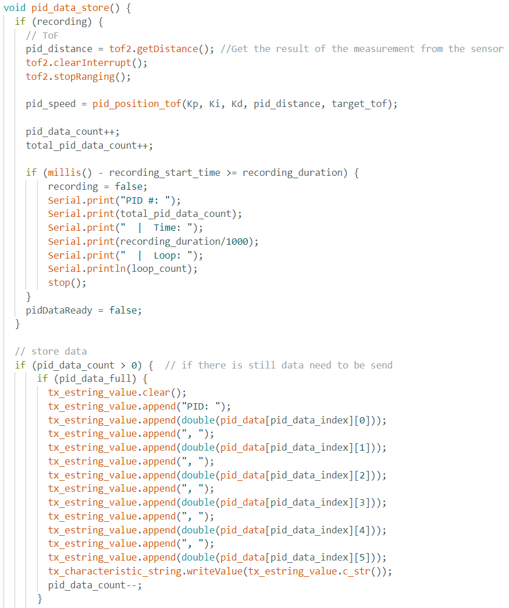PID Tuning
At first, I used Kp=0.05, Ki=0.05, Kd=1, which led the robot to bump into the wall with a close initial displacement about 2 meter. With a very short distance for acceleration, the robot still run pretty fast and cannot stop itself from bumping into the wall, meaning that the Kp is too high for high acceleration and Kd is too small for slowing down too late. The robot also didn't backup after hit the wall, meaning the Ki is too small. Here is the ToF vs Time plot with Kp=0.05, Ki=0.05, Kd=1:
To slow down the robot at an eariler and have more backup when too close to obstacle, I increased the Ki and Kd to 0.13 and 1.5, while decreasing the Kp to 0.03. Here is the ToF vs Time plot:

The updated PID constant results in a slow acceleration but still bump into the wall cause by the late deceleration, so I increase the Kd to 5, 10, 20, 50, and 100, which shows a trend of slowing down at an eariler time with bigger gap between the obstacle and robot, but it still got too close when initial displacement increases.
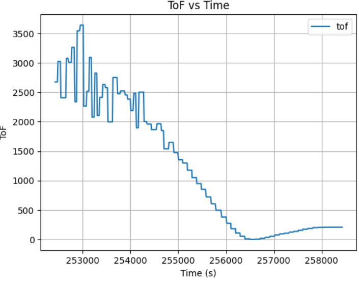
After many rounds of robot PID control tests with different K constant, I conclude that when placing robot at initial displacement of 2m, Kp=0.02, Ki=0.13, Kd=20 is good enough due to small distance for acceleration:
However, when the robot initial placement is around or greater than 3 meter, the Kd of 20 is not enough. The testing result shows a Kp=0.02, Ki=0.13, Kd=200 with the max velocity of 60 will led the robot stop at exactly 1 ft when initial place about 4 and 5 meter away:
Conclusion
This lab demonstrated real-time PID control for robotic motion using BLE and ToF sensors. The PID controller successfully adjusted motor speed based on ToF distance. Key takeaways include:
- Sensor sampling rate affects PID loop performance.
- Fine-tuning of PID gains:
- Lower Kp → slower response to reduce acceleration rate to have better control for PID calculation.
- Higher Ki → More error accumulation for robot backup correction when too close to obstacle.
- Higher Kd → More damping to create better stability for eariler deceleration.
Lab 6Orientation Control
Introduction
This lab focuses on implementing a PID controller to control the yaw orientation of a robot using an IMU. Unlike Lab 5, which controlled distance using TOF sensors, this lab employs a gyroscope to estimate the robot's orientation. The goal is to achieve stable stationary orientation control through a differential drive system. Challenges include sensor bias, integration drift, derivative kick, and Bluetooth command handling
Materials
- 1 x Assembled Robot (Artemis board, IMU, ToF sensors, motor drivers)
- 1 x USB cable
- 2 x Li-Ion 3.7V batteries
- 2 x 4m ToF sensors (VL53L1X)
- 1 x 9DOF IMU sensor
- 2 x Dual motor driver
BLE Communication Setup
To allow real-time tuning and monitoring, the PID controller was integrated with the Bluetooth communication system implemented in Lab5, allowing remote tuning of Kp, Ki, and Kd values. The following approach was implemented:
1. BLE Characteristics were defined for sending and receiving data:
rx_characteristic_string: Receives PID control commands.tx_characteristic_float: Sends sensor readings.tx_characteristic_string: Sends debugging messages.
PID Control Activation via BLE: The PID control loop starts upon receiving the following command format:
ble.send_command(CMD.PID_OIREN_CONTROL, "maxTime|Kp|Ki|Kd|SetPoint")
Similar to my implementation in Lab3 and Lab5, the loop constantly check the IMU sensor data readiness and it only stores new data when the sensor is ready, stores old data when sensor not ready. This ensures a high loop rate without waiting for the sensor that has slow data collection rate. The sensor releases new data evey 40 ms.
While the PID control waiting for new sensor data, it will use the old data to compute for motor input at a really high rate about every 12 ms. Using the similar array storing and transimission method implemented in Lab3, which is have a arrays size 2500 row, storing new data every row, starting sending data before overwrite with new data if the array is full, and send data after data collection if array is not full.
C++ script for sending data from Artemis:

Python script for receiving data from Artemis:

IMU Bias Compensation
To ensure the IMU's accuracy over time, we should determine the gyroscope's bias parameter during the Artemis setup. After running the setup script, we obtained the gyroscope bias range from 0.6 to 0.9. Implementation in code:
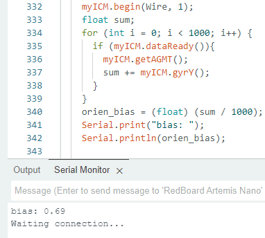Lab Tasks
PID Control Strategy
To stabilize orientation, a PID controller was implemented with tunable proportional, integral, and derivative gains:
- e: Error (distance from target).
- Proportional Gain (Kp): Reacts to the current error, adjusting motor speeds accordingly
- Integral Gain (Ki): Compensates for accumulated past errors, reducing steady-state error.
- Derivative Gain (Kd): Predicts future errors by evaluating the rate of error change, damping oscillations.
Before the PID orientation implementation, I first tested the PWM needed for robot turning cw and ccw, and obtain a minimum turning PWM signal of 100 with right motor requires 60% more PWM signal in order to turn with same speed as left motor. Implementation in Code below:
PID Tuning
At first, I used Kp=10, Ki=0.1, Kd=0, which led the robot to spin none stop, I first conclude that it is because the robot kp is too high leading high turning speed that misled the PID judgment:
With Kp=0.5, Ki=0.1, Kd=0, the robot still spinning none stop, showing the robot has an rapidly accumulating integrated err, which overcontrol kp and ki.
To resolve that, I added in a limit for the maximum integrated err value, to keep the robot under control.
After adding the wind-up protection of 500 max integrated err, the robot was able to adjust its angle to the desired set point, but it will tweak with big movement around the set point, indicating the need to add in an Kd for stablization when reaching the setpoint.
By keeping the Kp and Ki the same, adding Kd of 10, 50, and 100, the plot displays the reduction of tweaking around set point, but still cannot remove fully even with big Kd value.
Kp=5, Ki=0.05, Kd=10
Kp=5, Ki=0.05, Kd=50
Kp=5, Ki=0.05, Kd=100
To further remove the tweaking around set point, I decreased Kp and Ki to reduce the effect of current err and integrated err on the PWM, which helps the robot to gain better control and stablilty around the desired angle.
Kp=2, Ki=0.005, Kd=100
To allow the robot to accurately adjust its angle (ex. -90 to 90 degree), I further increased the Kd value to capture the precise PWM control by actively checking its err derivate to prevent turning overshoot.
Kp=2, Ki=0.005, Kd=200
After many rounds of robot PID control tests with different K constant, I conclude that the best PID constant for orientation control with full battery state of charge is Kp=2, Ki=0.13, Kd=200: However, when the robot battery state of charge being relatively low, the Kp need to increases to 5 in order for the robot to turn effectionly. Here is the video of robot adjusting its angle to desired set point when being move by force externally:
I also wrote an python open loop script for the robot orientation control, telling it to turn to differe angle multiple time. The robot reacts with pretty accurate orientation control. Implemented in code:
Orien PID Discussion
- Gyroscope drift was reduced by calculating bias at initialization.
- Higher Kp led to faster corrections but increased oscillations.
- Ki helped eliminate steady-state error but caused overshoot when too high.
- Kd improved damping but required fine-tuning to avoid instability.
Conclusion
This lab successfully demonstrated stationary orientation control using a PID controller. Through parameter tuning, wind-up protection, and Bluetooth integration, a robust control system was implemented. The results highlight the importance of PID balance for achieving stability, accuracy, and responsiveness in robotic orientation control.
Lab 7Kalman Filter
Introduction
The objective of this lab is to implement a Kalman Filter (KF) to enhance the performance of distance estimation using Time-of-Flight (ToF) sensors. By incorporating the KF, the robot should be able to approach the wall at high speeds while accurately estimating its position to either stop 1 ft away or turn within 2 ft. The Kalman Filter is first tested in Jupyter Notebook and then integrated into the Artemis robot.
Materials
- 1 x Assembled Robot (Artemis board, IMU, ToF sensors, motor drivers)
- 1 x USB cable
- 2 x Li-Ion 3.7V batteries
- 2 x 4m ToF sensors (VL53L1X)
- 1 x 9DOF IMU sensor
- 2 x Dual motor driver
- 1 x Crash-pillows (for testing safely)
Lab Tasks
1. Estimate Drag and Momentum
To build the state-space model, the drag and momentum terms were estimated using a step response test. The robot was driven toward a wall at a constant PWM input while logging motor input values and ToF sensor readings. Using the data transmission function implemented for the PID control, I sent the collected ToF and time data through BLE. To produce a cleaner plot, I wrote function to filter the repeatitive ToF value and use the filtered value to calculate the robot velocity:
Data filtering: Velocity Calculation: Here is the resulting plot of ToF and Velocity vs time while the robot driving toward the wall: With the data plot I obtained for ToF and Velocity vs time, I concluded that the Steady-State Speed is ~750 mm/s and the 90% Rise Time is ~1 s. Thus, the drag and momentum parameters can be initialized as below. 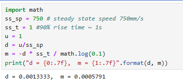2. Initialize Kalman Filter (Python Implementation)
After collecting the data and initializing the parameters, the Kalman Filter (KF) can be configured accordingly. The equations presented in the lecture slides define the Kalman Filter framework. To implement it, key parameters must be identified, including the state-space matrices A, B, and C, as well as the noise matrices σ_u and σ_z. State-Space Matrices 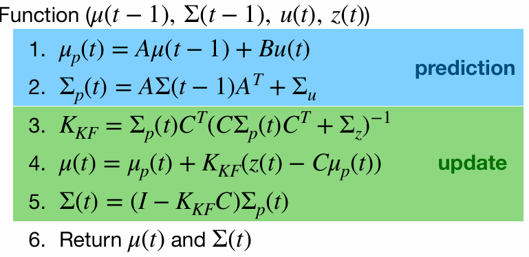 The system state-space model is defined by matrices A, B, and C. Given the ToF sensor sampling rate is about 100ms determined in Lab3, so the system was discretized with ΔT=0.1s. Hence, the A and B matrix can be obtain: Next, the C matrix can be determined as an m × n matrix, where n represents the dimensions of the state space, and m corresponds to the number of measured states. In this case, the C matrix is [-1, 0], as the distance is measured from negative to zero as the robot approaches the wall. Additionally, the state vector X should be initialized as the first ToF data. Furthermore, the process noise covariance (Σu) and sensor noise covariance (Σz) were initialized with rough estimates and later fine-tuned: Currently, the variance values are only rough estimates. They will be tested and adjusted later to determine the optimal values.
3. Kalman Filter Function in Jupyter
The Kalman Filter function python implementation is given by the lab guide. After copying the code over to jupyter lab, I created an array, kf_data, to store the KF filter result.
With the initial state and covariance matrix declared as first ToF data and [5^2 0; 0 5^2], the collected ToF data was processed through the Kalman Filter to validate its performance and then plotted. The Kalman Filter output was compared to raw ToF measurements:
The first plot shows that a Σz of 400 makes the KF trusts sensor data less, leading it to lags more behind the actual sensor data and overly dependent on the process model. After tuning the Σz down to 100, the KF result fit more closely:
The second plot shows that a low Σu of [1000 0; 0 1000] makes the KF too confident, leading some inaccurate prediction. The gap between the KF and real ToF data is much much smaller after increasing Σu to [4000 0; 0 4000]:
 The third plot still isn't perfect, by further increasing the Σu to [4000 0; 0 4000], we obtain the most fit KF result:
Initially, the filter was too sensitive to sensor noise, requiring parameter adjustments. By tuning covariance matrices (Σu,Σz), a smoother estimate was obtained.
The third plot still isn't perfect, by further increasing the Σu to [4000 0; 0 4000], we obtain the most fit KF result:
Initially, the filter was too sensitive to sensor noise, requiring parameter adjustments. By tuning covariance matrices (Σu,Σz), a smoother estimate was obtained.
4. Kalman filter at a faster frequency To increase the Kalman Filter's operating frequency, I modified the sampling rate. This results in a time step of 20ms when ΔT = 0.1/5. Between readings, the prediction step is used to estimate the car's state. While this step resembles the linear extrapolation method from Lab 6, it is specifically part of the Kalman Filter process. Using the new delta_T of 0.02, I obtain the figure as below, which illustrates the diagram with decreasing delta_T: 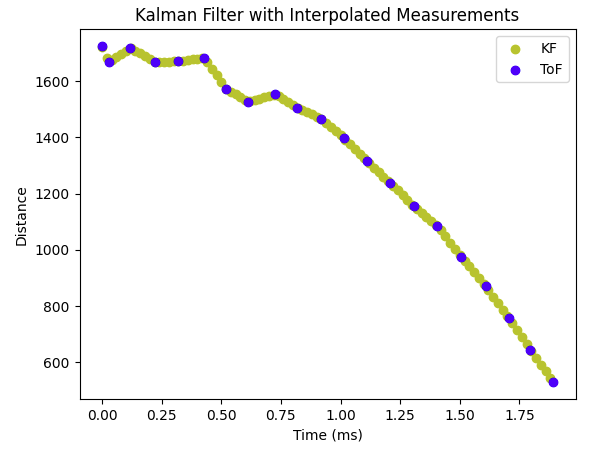
5. Implement Kalman Filter on Artemis
The Kalman Filter was then implemented in C++ on the Artemis microcontroller. I imported an new library BasicLinearAlgebra.h for matrix manipulation.
By running the PID ToF control using KF on the robot over BLE, we obtained 2 plot of robot distance with/without KF:
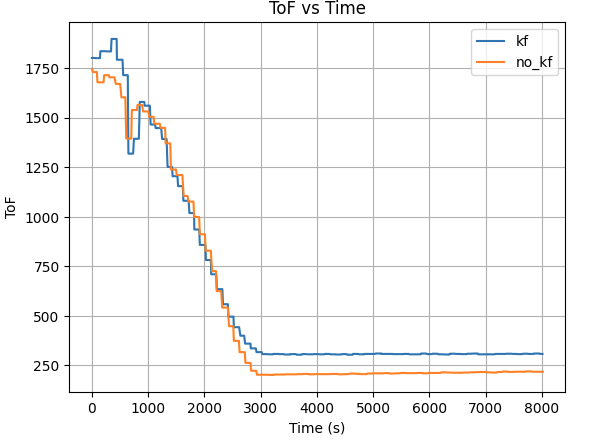
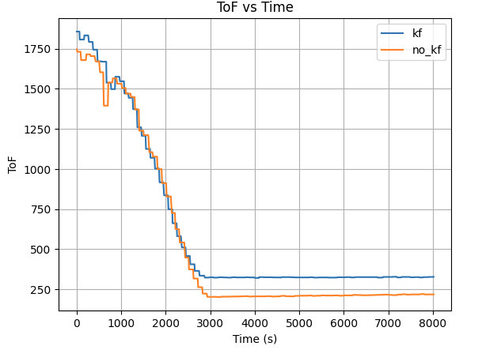
Both plot result shows the robot position itself closer to the targer distance (300mm) away from wall using KF, while the robot overshoot itself passed the target distance. This indicates the robot has a better control when equipped with KF in PID control.
Discussion
The Kalman Filter significantly improved distance estimation by reducing noise and enabling the robot to react more accurately. Key insights include:
- Proper tuning of process and measurement noise matrices was essential for stability.
- Running the Kalman Filter at a higher frequency improved performance.
- The filter successfully complemented the PID controller, allowing the robot to approach the wall safely at higher speeds.
- Future work involves optimizing execution speed further and integrating the Kalman Filter with Lab 8's tasks.
Conclusion
The implementation of the Kalman Filter enabled faster and more reliable state estimation, allowing the robot to navigate with improved precision. Successful integration on the Artemis demonstrated its effectiveness in real-time control applications.
Lab 8Stunts! – Flip Challenge
Introduction
The objective of this lab is to perform an autonomous robot stunt using the hardware and software framework built over the course of the semester. Specifically, we aim to execute a forward flip maneuver using speed and controlled braking, leveraging the onboard Time-of-Flight (ToF) sensor, motor controls, and Kalman Filter (KF) for fast and accurate distance estimation.
Materials
- 1 x Assembled Robot (Artemis board, IMU, ToF sensors, motor drivers)
- 1 x USB cable
- 2 x Li-Ion 3.7V batteries
- 2 x 4m ToF sensors (VL53L1X)
- 1 x 9DOF IMU sensor
- 2 x Dual motor driver
- 1 x Crash-pillows (for testing safely)
Lab Tasks
1. Accurate ToF data with KF
For the flip stunt, I used the Kalman Filter developed in Lab 7 to accurately estimate the distance to the wall using the ToF sensor. This estimation runs at a higher effective frequency by combining sensor input and prediction modeling, which is critical for fast maneuvers where ToF readings alone may be too slow or noisy.
2. Stunt States and Logic
I implemented a function kf_position_tof() that controls the stunt behavior based on the robot's distance from the wall. The robot proceeds through three states:
- State 1 – Forward Acceleration: The robot starts from rest and accelerates forward at high speed. KF continuously estimates the position using motor input and ToF readings. Sometimes, the robot may fail to detect the distance correctly and continue moving indefinitely. To prevent this, I added a timeout condition that forces the robot to stop if it remains in this state for more than a couple second (input from jupyter lab). State 1 also record the start time of the flip for timing the flip.
- State 2 – Flip Trigger: Once within ±100mm of the target flip distance (~300m input from jupyter lab), the robot reverses motor direction at max speed to produce an abrupt deceleration. This generates a torque that causes the robot to pitch forward and flip. The time of reaching state 2 is also record to obtain time from start to flip.
- State 3 – Timed Backward Stop: After flipping, the robot drives backward for the time difference between start and flip before stopping, approximating a return to the starting region.
3. Jupyter lab control
By using the similar BLE setup on the Artemis, I was able to control robot to perform stunt remotely using jupyterlab and BLE by sending command:
3. Stunt recording
Below is three successful stunts of the robot flip and one really cool stunts the robot accidentally made:
To collect flip data, I created a SENDING_FLIP_DATA case to transmit the recorded values from the Artemis to the laptop via the BLE channel. The motor commands indicate that the robot initiates the flip maneuver when it is within 1/2 second of the target wall distance. Using the same data transfer method as in previous labs, I sent arrays of ToF and PWM data from the Artemis to Jupyter Lab and plotted them over time.
From the graph, we can see that the robot began its stunt approximately 2 meters away from the wall and initiated the flip roughly 5–10 cm from the wall. After the flip, it moved backward. The ToF readings during the reverse motion are less accurate due to the sensor being mounted at a slight downward angle. This positioning caused the sensor to occasionally capture reflections from the ground instead of directly ahead. The sudden spikes in distance readings correspond to moments when the robot flips and the front wheels briefly lift off the ground, allowing the sensor to momentarily detect a farther range before settling back.
Conclusion
This lab successfully brought together core components—sensors, estimation, and control logic—to execute a fast and dramatic stunt. The forward flip was achieved using a combination of speed, precise triggering, and timed reversal. The KF-based localization greatly improved reliability, allowing consistent performance across multiple runs. While tuning the flip distance was tricky due to slight variation in sensor readings and sticky mat placement, once dialed in, the stunt proved repeatable and robust.
Lab 9Mapping
Introduction
This lab involved mapping a room using a robot equipped with Time-of-Flight (ToF) sensors and an IMU. The robot performed in-place rotations at designated positions while collecting distance data. The quality of the map depended on how evenly spaced the ToF samples were during rotation. Three control methods were proposed: open loop control, PID on orientation, and PID on angular velocity. In this lab, we implemented PID orientation control to perform consistent angle-based rotations. After data collection, we merged the scans using trigonometric projection and visualized the map in both polar and global frames.
Materials
- 1 x Assembled Robot (Artemis board, IMU, ToF sensors, motor drivers)
- 1 x USB cable
- 2 x Li-Ion 3.7V batteries
- 2 x 4m ToF sensors (VL53L1X)
- 1 x 9DOF IMU sensor
- 2 x Dual motor driver
Lab Tasks
PID orientation controll
To achieve accurate in-place rotation, we used our previously implemented pid_orien_imu() function, which adjusts motor PWM values based on the angular error between the robot's current orientation and a target angle. We initialized a mapping loop where the robot updated its target heading by a fixed angle every accel_gap milliseconds. The desired angular increment and rotation speed were transmitted from the laptop via BLE.
PID control code:
ToF data collect code:
After careful tuning and testing of the PID control, we obtained the control command below. This rotated the robot in ~10° increments, each with a puase of ~0.4 second, collecting ~36 samples per scan position. The controller ensured consistent angular steps and eliminated drift that often affected open loop control.
Data transimission
After the rotation completed, the robot to send back time and distance data using the same method as previous lab, an 2D array to store the ToF sensor data and its timestamp and send the data through BLE when duration time ended or array is full(continue collects data and send at the same time to ensure storage and data continuity).
Mapping
Polar Plot Generation
After collecting ToF dataset at 5 different location in the map, I obtained the following raw distance data plots:
Given the use of PID control, the data obtained was collected in relatively even spaced angular steps with the starting angle theta. The corresponding angle for each sample was calculated using np.linspace:
This provided a clean polar representation of the space surrounding each scan location.
With each scan taken at a known position (x, y) in the map frame, and each sample associated with a global direction theta, I computed the transformed coordinates:
Each scan dataset was plotted with a unique color. The data aligned well and traced walls and obstacles pretty accurately in close distance (within 0.5m). Minor offsets in far distance data between scans were likely due to small moved distance robot made while turning for 360 data sampling or different starting and ending robot position.
Due to time constrain, I was only able to collect data at locations [-3, -2], [0, 0], [0, 3], [5, 3], and [5, -3] twice. With no calibration, all those points can be plotted into the same diagram. We can see that the robot captured most of the mapping shape and obstacle wall accurately, with minor data point shifting and little to no outstander.
I drew the estimated map based on the ToF mapping, which we can see alined accurately in some places while being place in between different data plotting results. This will most likely be resolved when I collect more data in different location repeatively in future.
Conclusion
In this lab, I successfully implemented closed-loop PID orientation control to perform precise in-place rotations for room mapping using Time-of-Flight sensors and an IMU. The system rotated the robot in controlled ~10° increments with stable timing, producing evenly spaced angular samples for each 360° scan. By combining the collected distance data with known robot positions and orientations, I converted local ToF readings into global coordinates and generated both polar and Cartesian maps of the room.
The results show that the robot was able to accurately capture surrounding walls and obstacles, particularly within short-range distances (~0.5 meters). While some minor misalignments and offset points appeared—especially in farther regions or between different scan locations—these were likely caused by small shifts in the robot’s position during rotation and slight inconsistencies in the initial heading.
Despite limited time and only two scans per location, the compiled map already closely resembles the actual map layout. With additional repeated measurements and calibration, these remaining discrepancies can be minimized. Overall, this lab demonstrated the effectiveness of closed-loop orientation control for reliable spatial data acquisition and laid the groundwork for future localization and navigation tasks.
Lab 10Grid Localization using Bayes Filter (Simulation)
Introduction
The purpose of this lab is to implement a grid-based robot localization system using the Bayes Filter. In this system, the robot navigates within a simulated environment, and its location is estimated probabilistically over time by maintaining a belief distribution across a discretized 3D grid of possible states (x, y, θ). This belief is updated in two stages — using odometry data during the prediction step, and using sensor readings during the update step.
The goal is to localize the robot accurately despite noisy motion and sensor data. This lab demonstrates how motion estimation and sensor correction can be integrated in a Bayesian framework to achieve robust localization.
Prelab
Background The Bayes Filter maintains a probabilistic estimate of the robot's location. At each time step, it goes through:
- Prediction Phase: Integrates odometry (control input) to estimate the robot’s movement.
- Update Phase: Refines the estimate using range measurements from onboard sensors.
- Prior belief (bel_bar): After prediction
- Posterior belief (bel): After sensor-based correction
Lab Tasks
Compute control
This function extracts control parameters from odometry: the first rotation (rot1) aligns the robot with its direction of motion, the translation (trans) measures the straight-line distance traveled, and the second rotation (rot2) aligns the robot with its new heading. It uses trigonometry and normalization to ensure angles are within [−180°,+180°]. These control values are used by the prediction step and odometry motion model to simulate and evaluate the robot’s motion under uncertainty.
This function models the uncertainty in robot motion by computing the likelihood that a given transition between poses is consistent with a control input. It uses the Gaussian distribution to score how likely the observed motion is, based on known noise parameters for rotation and translation. It plays a central role in the prediction step, determining how prior belief values propagate to future poses based on motion.
Prediction Step
The prediction step estimates where the robot could be after applying a motion command, and produces the prior belief (bel_bar). It uses control data from odometry to determine how likely the robot is to have transitioned from any previous state (px, py, pa) to a new state (cx, cy, ca).
To compute this,the algorithm:
- Extracts the motion command using
compute_control(), which calculates the robot’s relative movement as a tuple (rot1, trans, rot2) based on odometry readings. - Loops through all previous states with significant probability (filtering out very low values to improve efficiency).
- For each possible current state, it computes the likelihood of that transition using the odometry motion model (
odom_motion_model()), which applies a Gaussian probability based on the motion noise. - It then updates the prior belief by multiplying the transition probability by the belief at the previous state and adding that contribution to the current state's prior.
Finally, it normalizes the belief grid bel_bar to ensure the total probability sums to 1. This prior is then used in the update step, where sensor data will refine the belief.
This function updates the belief bel using sensor measurements. In this implementation, I did not use a separate sensor_model() function. Instead, I chose to perform sensor likelihood calculations directly within the update_step() function, which makes the code more efficient and easier to follow. Each time the Bayes filter needs to evaluate the likelihood of a pose, it directly accesses the expected sensor data for that pose using mapper.get_views(cx, cy, ca) and compares it with the robot’s actual sensor readings stored in loc.obs_range_data.
Each of the 18 individual sensor measurements is evaluated using the loc.gaussian() function, and their probabilities are multiplied together to get the final likelihood p(z∣x) for that pose. This likelihood is then multiplied with the prior belief from the prediction step (bel_bar) to compute the updated belief (bel).
Result
After executing the full trajectory, I observe the localization results in the simulator:
- 🔴 Red – Odometry: Estimate from wheel encoders only. Accumulates drift quickly.
- 🟩 Green – Ground Truth: Actual robot position in simulation.
- 🔵 Blue – Belief: Output of the Bayes filter. It closely tracks the green ground truth path.
The belief begins with uncertainty but gradually aligns with the actual path. The odometry alone diverges significantly, demonstrating the importance of using sensor data to correct the estimate.
The videos below display the process of the licalization:
Furthermore, the following is the data output during that process:
Conclusion
In this lab, we successfully implemented grid localization using a Bayes filter with 3D state estimation. The algorithm integrates:
- Odometry-based motion prediction
- Range-based sensor correction
Lab 11Grid Localization using Bayes Filter (Real)
Introduction
After successfully verifying the Bayes filter in simulation, this lab focuses on implementing the update step only on the real robot. The prediction step was omitted due to noisy motion characteristics caused by variable friction, battery drift, and inconsistent wheel traction. The goal was to observe how real-world sensor data (specifically ToF readings) influence belief updates when executing a 360° rotation in place.
Lab Tasks
Bayes Filter (Simulation)
We began with lab11_sim.ipynb, which visualized the odometry, ground truth, and belief distribution.
This ensured the Bayes filter behaved correctly in simulation before transitioning to hardware.
Localization on Real Robot
The LOCALIZATION command was implemented in Arduino. The robot rotated 360° in place,
capturing 18 evenly spaced ToF readings (~20° apart), data being avg then stored in array which later send over to analysis through BLE.
To prevent missing the first data point, the 0° ToF reading was explicitly captured before the rotation began.
Using the pid_orien_imu() function implemented in previous lab, the robot was able to be control through PID to accurately turn 20 degree per step,
with an increment of 11 in its target angle.

I also implemented an reset_orientation() function to ensure starting gyro angle is the starting angle,
to prevent the random spinning robot made when it starts orientation control during previous lab.

After 18 data was collected, the robot stop its spinning and starting transmitting the ToF data.
Python Implementation
The perform_observation_loop() function is responsible for commanding the robot to perform a full 360° rotation while collecting
ToF sensor readings at evenly spaced angular intervals (approximately every 20°).
It begins by activating BLE notifications with a handler (data_collect) that parses incoming distance readings.
Then, it sends a CMD.LOCALIZATION command to the robot, along with PID parameter carefully tuned in Lab 9,
which uses PID control to rotate and pause at each angle to capture a ToF reading.
To ensure the rotation completes and all data is received, the function uses
asyncio.run(asyncio.sleep(20)) instead of time.sleep, allowing BLE messages to be processed without blocking the event loop.
Once the rotation finishes, BLE notifications are stopped. The collected readings are converted from millimeters to meters and reshaped into a column vector with shape (18×1), ready for the Bayes filter update step.
Ground Truth Comparison
After running the Bayes Filter using the real robot at different location in the map, I obtained 3 beliefs for each spots:
Each result was compared to the belief distribution's peak from loc.plot_update_step_data().
Results
After 3 testing at each spot, I obtained the following results, where the green dots stand for theoretical result and the blue dots indicate actual position coordinates.
Position (0, 0):
Position (0, 3):
Position (-3, -2):
Position(5, 3):
Position (5, -3):
The beliefs of the robot at all location are really correct compare to the robot truthPose, with a difference of less than 0.1. For location (-3, -2),(5, 3), and (5, -3), there is 1 of the 3 Bayes Filter results that is not so accurate but is still near the truthPose area, which is likely due to the thick tape on the ground that hindered the robot data collection process, making the ToF data no longer 20 degree even spacing and blocking the robot to rotat fully 360, which cause the shift in beliefs. The other two beliefs of these location were not affected by the tapes and returned perfect belief locations.
Conclusion
The result of this lab presents a fairly accurate and reliable Bayes Filter belief output, showing that probabilistic localization with a Bayes filter can work effectively in real-world settings using ToF scans. Despite sensor and motion noise, the robot localized accurately in all marked poses with some error trails affected by the map environment. Future improvements could include:
- Implementing the
get_pose()function which integrate odometry data for future robot navigation - Combining ToF and IMU data into a fused sensor model
- Visualizing the full belief heatmap over time
Lab 12Path Planning and Execution
Introduction
The goal of this lab is to enable the robot to autonomously navigate between a given sequence of waypoints in a known environment, while also performing periodic localization to correct for drift and errors accumulated during movement. The navigation should be as accurate and efficient as possible, integrating feedback control and localization in a top-level controller. This lab is intentionally open-ended to allow us to design the navigation system based on our robot's current capabilities.
Approach Overview
The approach for this lab consists of:
- Developing a waypoint-to-waypoint navigation function that assumes the robot will start perfectly at each waypoint.
- Implementing this navigation function using PID-based angle and position control.
- Using ToF and IMU sensors for feedback control in both turning and straight movement.
- Performing periodic localization using 360-degree ToF scanning and Bayes filter, integrated into the navigation pipeline.
- Building a top-level controller to combine localization and navigation iteratively until all waypoints are visited.
- Carefully tuning all PID control parameters to ensure accurate movement and precise stopping at each waypoint.
Detailed System Implementation
Navigation: waypoint-to-waypoint control function navigate_to_target
The core idea of navigation starts with the assumption that the robot will start perfectly at the given waypoint. Based on this assumption,
a function called navigate_to_target is written which takes the starting and target positions (x1, y1) and (x2, y2) as input arguments. The
navigation process has several steps:
Angle Calculation and Turning
- The robot first calculates the angle required to face the target waypoint from the current waypoint based on
(x1, y1)and(x2, y2)using trigonometric calculations. - The robot assumes it starts at angle
theta = 0for each waypoint. - If the calculated angle is non-zero, the robot uses a previously implemented function
pid_orient_imuto turn precisely to the desired angle. This function was implemented and tested in Lab 7 and can control the robot to face a target angle accurately. - A while loop is used to check for loop count during turning. The max loop count is set to around 200, which corresponds to approximately 3 seconds. If the loop count reaches this max count, the robot proceeds to the next phase even if the angle is not exactly met to avoid infinite loops or stuck conditions.
- If the calculated angle is zero, the
pid_orient_imufunction and the loop are skipped completely to save execution time and the robot directly proceeds to straight movement.
Straight Movement Toward Target
- The distance between the current and target waypoint is calculated and stored as
movement. - The robot uses its ToF sensor to measure the distance to the nearest wall and stores this as
distance2. - The stopping point for the robot is calculated as
distance2 - movement, which becomes the target position for straight movement. - The robot uses another previously implemented PID function called
pid_position_tofto control straight movement towards the target position. This function uses the ToF data as the current position and compares it with the target position to calculate the error and apply PID control to motor PWM signals. - A loop counter is again used to limit the straight movement. The max loop count is set to around 500, which is approximately 8-10 seconds, which is more than enough for the robot to settle at the desired position.
Final Orientation Reset
- After reaching the desired waypoint, the robot automatically sets the target angle to 0.
- The robot then uses
pid_orient_imuagain to turn and face the starting angle (theta = 0). - This is important because starting at angle 0 helps the robot perform 360-degree localization easily and prepares it for accurate next step navigation.
Robot Main Loop
The main loop on the robot setup BLE communication to receive and send data and commands, it allows me to send command to control robot to start navigation or localization.
PID Tuning and Control Parameters
In order to achieve accurate turning and movement, I carefully tuned the PID parameters through extensive testing.
The robot needs to:
- Move precisely for distances of 1 ft, 2 ft, 3ft, or 5 ft between waypoints.
- Turn precisely by angles of 45 degrees, 90 degrees, or 180 degrees.
| Parameter | Description |
|---|---|
| max duration | Max time for robot to move between waypoints |
| Kp, position | PID proportional gain for position control |
| Ki, position | PID integral gain for position control |
| Kd, position | PID derivative gain for position control |
| Kp, angle | PID proportional gain for angle control |
| Ki, angle | PID integral gain for angle control |
| Kd, angle | PID derivative gain for angle control |
| x1, y1 | Starting waypoint coordinates |
| x2, y2 | Target waypoint coordinates |
| max speed, position | Maximum allowed speed during straight movement |
| max speed, angle | Maximum allowed speed during turning |
| min speed, angle | Minimum speed to avoid motor stalling |
| Motor ratio | PWM ratio to balance left and right motors for straight driving |
| max loop count angle | Loop count limit for angle PID |
| max loop count position | Loop count limit for position PID |
| target angle conversion ratio | Conversion constant from radians to robot control units |
The final tuned parameters that allowed perfect control are: "20|0.04|0.4|100|3|0.005|150|-4|-3|-2|-1|50|100|90|1.5|200|500|4.6".
Using these parameters, the robot can accurately:
- Move 1 ft, 2 ft, 3ft, and 5 ft.
- Turn exactly to 45°, 90°, and 180° with minimal overshoot.
- Stop within the expected range(~5cm) at each waypoint.
No turning left then move forward 3ft:
Turning 45 degree left then move forward 2ft:
Turning 45 degree right then move forward 2ft:
Turning 90 degree left then move forward 1ft:
Turning 90 degree left then move forward 5ft:
Turning 90 degree right then move forward 1ft:
Turning 90 degree right then move forward 5ft:
Turning 180 degree then move forward 5ft:
Localization Function
In the previous lab, I implemented a localization function that performs a 360-degree scan to collect ToF data for Bayes filter-based localization.
- The robot rotates in-place in 20-degree increments, collecting 18 ToF measurements.
- The ToF data is sent to Jupyter Lab through BLE.
- The Bayes filter uses the map and these measurements to compute the robot's most probable pose (x, y, theta).
- This localization result is used as the belief (x1, y1) for the next waypoint navigation step.
Top-Level Controller Design
- 1. Initialize and Localize: The robot starts at the first waypoint and performs localization to obtain the belief state.
- 2. Navigate to Next Waypoint: Using the
navigate_to_targetfunction, the robot moves and turns to the next waypoint base on the previous belief. - 3. Re-orient to Angle 0: After reaching the waypoint, the robot automatically turns back to angle 0 to standardize its orientation.
- 4. Localize Again: The robot performs another 360-degree localization scan and updates its belief state based on Bayes filter output.
- 5. Repeat: The above steps repeat until the robot visits all waypoints in sequence and reaches the final destination.
This modular and iterative design ensures that the robot can correct drift and maintain accurate navigation by alternating between motion control and localization at every step.
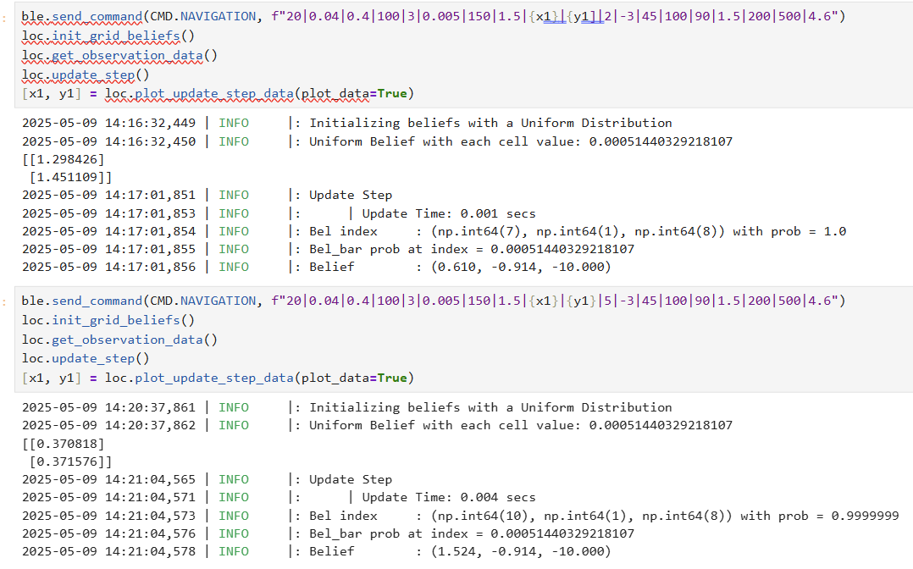Demonstration Videos and Plot
Video showing navigation and localization:
Video showing navigation only with assumed perfect starting points:
Final localization plot:
Final Results and Insights
The navigation system built for this lab successfully integrates precise PID control for both turning and straight movement, ToF-based distance feedback, IMU-based orientation control, and Bayes filter-based localization into a unified and reliable path planning and execution pipeline.
Through careful parameter tuning and modular design, the robot demonstrated the ability to move waypoint to waypoint with high accuracy, with localization performed after each waypoint to correct drift and maintain precision.
The system operated robustly within a structured environment without obstacles, and performance was verified through videos, localization belief plotting, and waypoint hit accuracy analysis.
While the path planning approach prioritized simplicity and reliability over optimality and obstacle avoidance, the results showed that this method was highly effective for the map and waypoint conditions provided. The assumption of perfect waypoint arrival was mitigated through periodic localization, ensuring the robot always started navigation phases from a reliable estimated pose.
Overall, this lab demonstrates a strong combination of motion control, localization, and system-level design, achieving all objectives and laying the groundwork for potential future improvements such as obstacle avoidance or path optimization.